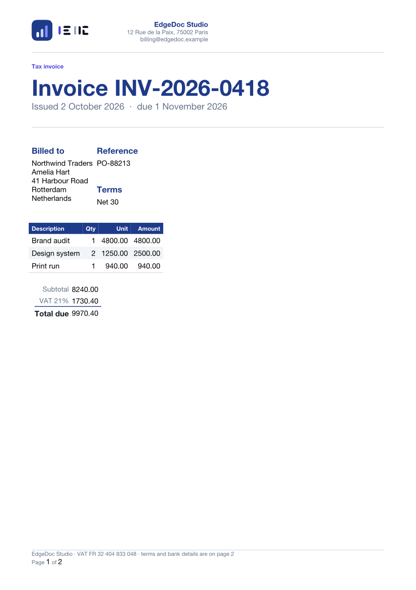
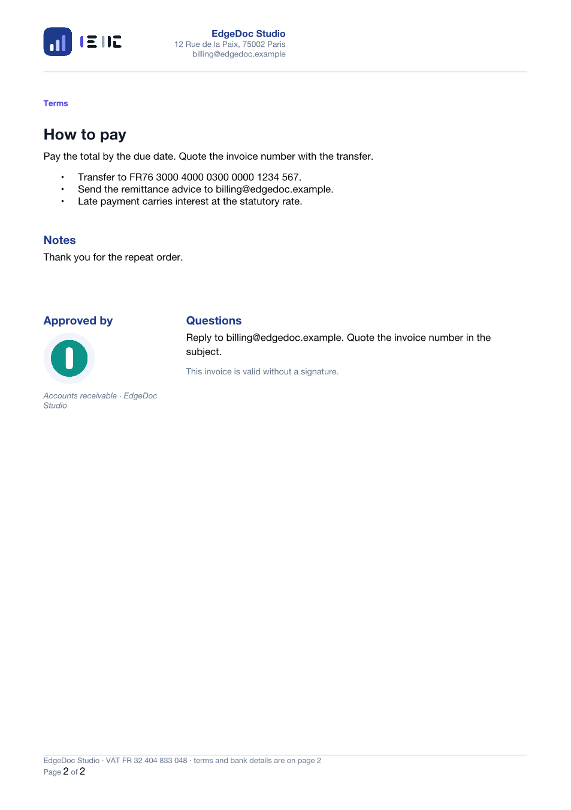
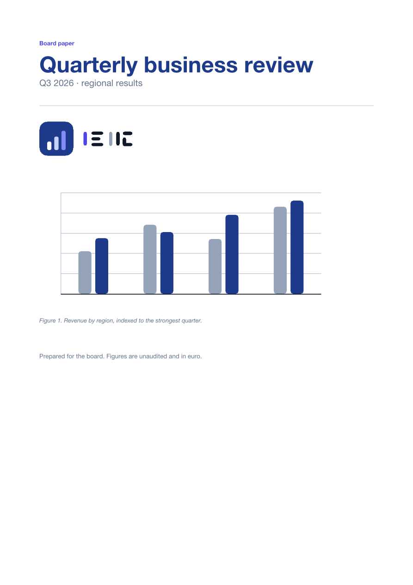
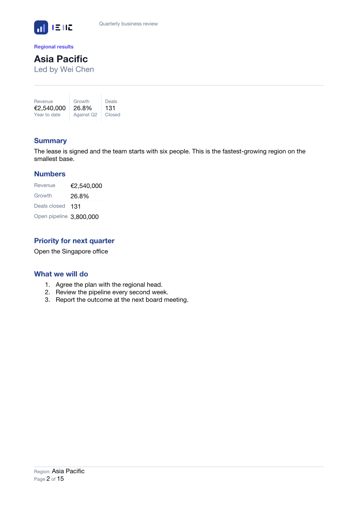
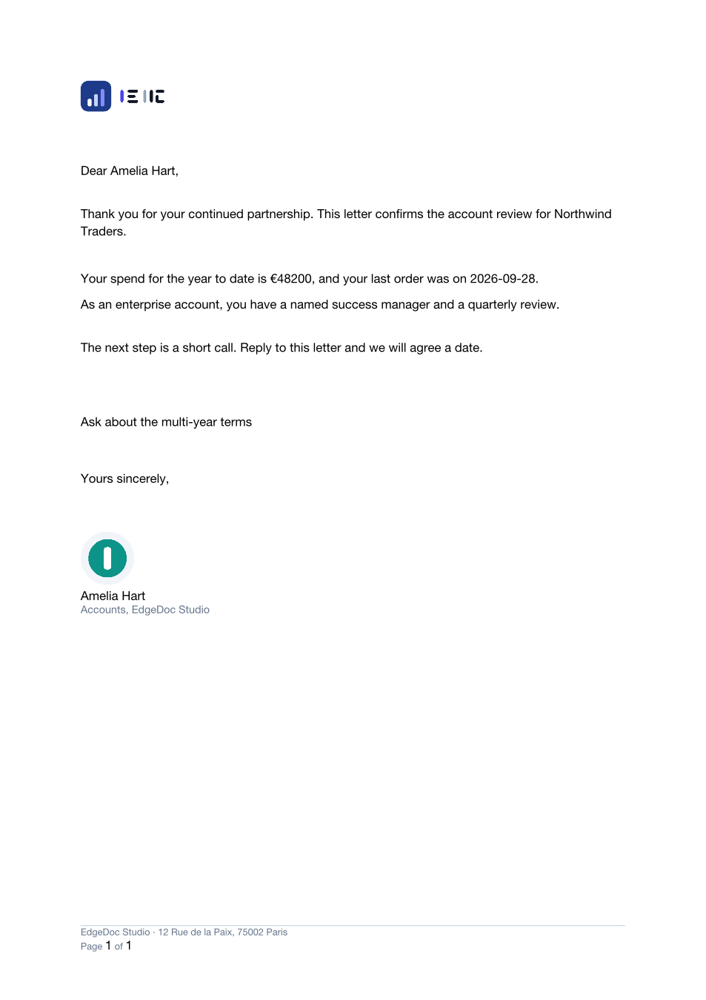
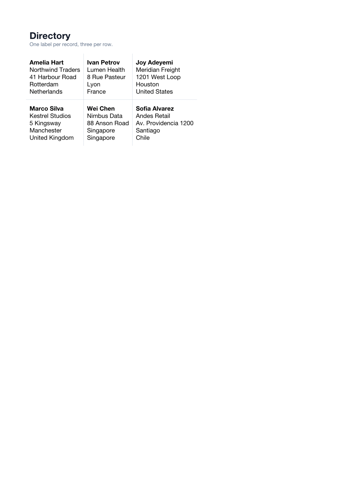
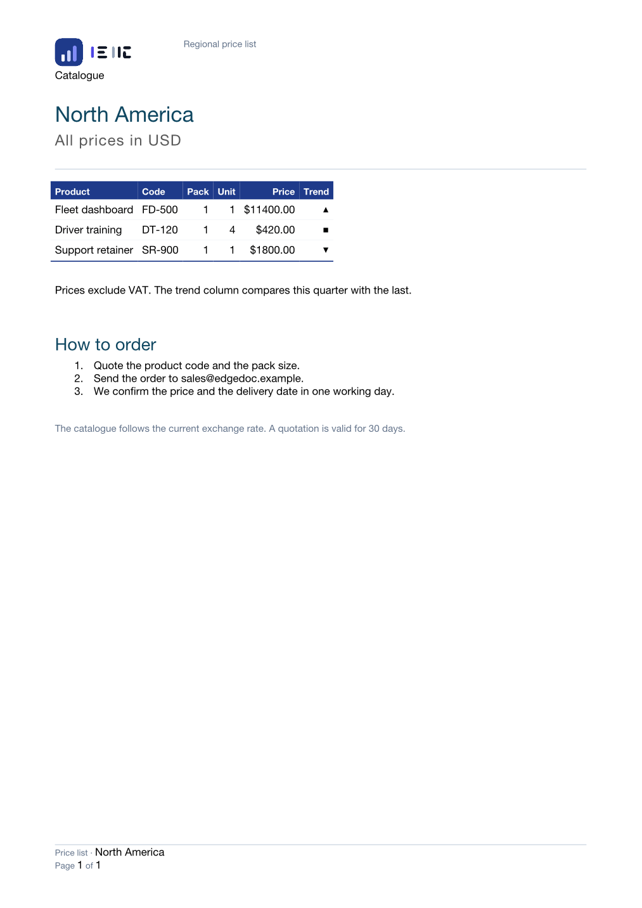
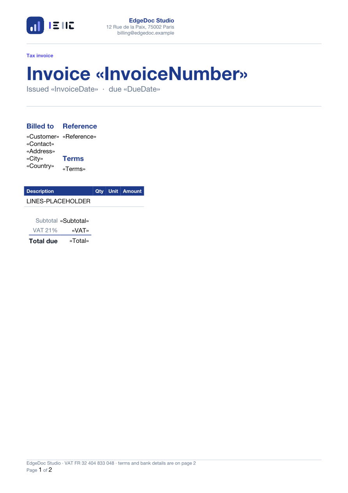

Modeled
The reader builds a typed value and the writer emits it. An edit can change it.
Runs, paragraphs, tables, sections, numbering, styles, pictures, fields.
Rust · Python · WebAssembly
Most libraries rebuild a .docx from a paragraph list. The file opens, but it is
no longer the approved template: the header lost its picture, the numbering changed, the
macros are gone.
EdgeDoc reads the parts it models and keeps every other part unchanged.
unsafe blocks
A .docx file is a ZIP of parts, not a list of paragraphs. So a feature is
either modeled or kept — never silently dropped.
The reader builds a typed value and the writer emits it. An edit can change it.
Runs, paragraphs, tables, sections, numbering, styles, pictures, fields.
The reader does not model the feature. It holds the markup, and the save copies it.
Macros, charts, tracked changes, themes, custom XML. Equations also export as LaTeX.
The file cannot be read safely. The call returns a stable error code.
Binary .doc, Word 2003 XML, encrypted packages.
A save with no edit returns the original bytes, byte for byte.
Every file below comes from the public fluent API. Each one is rendered by an independent Word reader, so what you see is what a word processor computes — not a mock-up. Download any of them and open it in Word.

Invoice
A header logo, a footer with “Page 1 of 2”, a billed-to block laid out side by side with the reference, a line-item table with alternating shading, and a totals strip with a double rule under the amount due.

Page two
A page break before the terms, a bulleted list, and a two-column closing block.

Report
A title page with its own header, an embedded chart with a caption, then one section per region. The footer carries a merge field, so each region page names itself.

Merged section
Five records produce five sections. Each metric, heading, and footer value comes from the CSV row.

Letter
A GREETINGLINE field builds the salutation. A conditional paragraph appears
only for enterprise accounts.

Directory
Every recipient on one page, three per row, with dotted separators.

Table merge
The template holds one row of fields: {Product}, {Code},
{Pack}, {Unit}, {Price}, {Trend}.
A catalogue merge repeats that row for every record, so three products produce three
rows and four regions produce four documents. The header row stays once.
The price and the trend mark come from map_value, which reads the currency
and the trend column and returns the symbol. The template stays plain text.

Template
Placeholders in guillemets show where each field lands. A merge fills them; the template never changes.
The crate, the wheel, and the WebAssembly module call the same facade. There is one catalog, one field parser, one budget, and one write path.
// Build a document with the fluent API.
let mut doc = Document::builder()
.core(CoreProps::new().title("Invoice"))
.page(Page::a4().margins(Mm(20.0)))
.style(Style::paragraph("Heading1").size(Pt(16.0)).bold())
.paragraph(Paragraph::new().style("Heading1").text("Invoice ").merge_field("Number"))
.table(Table::new().widths([Mm(90.0), Mm(30.0)]).header(["Item", "Amount"]).row(["Widget", "40.00"]))
.build()?;
// Merge one CSV into it. The template is never changed.
let letters = doc.merge()
.records(Records::from_csv(csv, &CsvOptions::default())?)
.kind(MergeKind::Letters)
.missing(MissingField::Error)
.finish()?
.join(Join::Auto)?;
letters.save("out.docx")?;import edgedoc
template = edgedoc.read_path("invoice-template.docx")
csv = edgedoc.read_path("orders.csv")
# Every function takes bytes and returns bytes.
merged = edgedoc.merge_records(template, csv, kind="letters", join="auto", missing="empty")
edgedoc.write_path("invoices.docx", merged)
# Read what is inside without opening Word.
print(edgedoc.doc_title(merged))
print(edgedoc.merge_field_names(template))
print(edgedoc.text_of_story(template, "header"))Install with pip install edgedoc.
const { mergeRecords, markdownToDocument } = require("edgedoc-wasm");
// Bytes in, bytes out. No file system, no threads.
const merged = mergeRecords(templateBytes, csvBytes, "letters", "auto", "empty");
const fromMarkdown = markdownToDocument("# Hello\n\n**Ada**\n");
console.log(merged.length, fromMarkdown.length);The npm package is edgedoc-wasm. make example-wasm runs ten examples in Node, including Markdown.
The body becomes Markdown, and that Markdown becomes a document again. Pictures come from a directory or from bytes you pass in. Formulas are LaTeX in the text and Office Math in the saved file.
let exported = doc.to_markdown()?;
let back = Document::from_markdown_with(
&exported.markdown,
&MarkdownReadOptions::new().images(
exported.images.iter().map(|image| {
MarkdownImage::new(&image.markdown_path, image.bytes.clone())
}),
),
)?;docx = edgedoc.markdown_to_docx(
"# Hello\n\n**Ada**\n",
[("images/dot.png", png)],
)
opened = edgedoc.open_markdown("notes.md")const docx = markdownToDocument("# Hello\n\n**Ada**\n");
const withImage = markdownToDocumentWithImages(
"\n",
["images/dot.png"],
imageBytes,
[imageBytes.length],
);Headings, emphasis, links, lists, tables, footnotes, endnotes, and pictures round-trip. A fenced code block becomes a paragraph. Headers, footers, and comments stay out of the Markdown body. The display viewer is a separate page.
The table below is locked by a test. A row without a test fails the build, and a test without a row fails it too — so the claim cannot drift from the code.
| Area | Status | Note |
|---|---|---|
| DOCX, DOCM, DOTX, DOTM | Modeled | Macros stay, and never run |
| Runs, paragraphs, character and paragraph formatting | Modeled | Caps, spacing, kerning, borders, tab stops, frames |
| Tables | Modeled | Spans, merges, borders, shading, floating position |
| Sections | Modeled | Columns, headers, footers, page numbering, line numbers |
| Bullet and number lists | Modeled | The writer builds the numbering part |
| Pictures, inline and floating | Modeled | Size, alt text, wrap, offset |
| Fields and content controls | Modeled | Including legacy form fields and w:ffData |
| Footnotes, endnotes, comments | Modeled | Each note and comment is an editable story |
| Styles of every kind | Modeled | Table styles keep their conditional formatting |
| Themes, charts, tracked changes | Kept | The save copies the parts |
| Office Math | LaTeX | Markdown uses $...$ and $$. The package stores OMML |
| Markdown | Read and write | Body text, lists, tables, notes, pictures, and formulas |
Binary .doc, Word 2003 XML | Refused | A stable error code, never a corrupt file |
| Encrypted packages | Refused | Detected and refused; decryption is not in this version |
Pagination, PDF, spell check, and VBA execution are out of scope. A layout engine is a different product.
pip install edgedocThe wheel ships native code for macOS, Linux, and Windows.
make package-wasmBuilds edgedoc-wasm for Node. The npm name edgedoc is a different project.
make # the target list
make check # format, clippy, and every test
make examples # build the twelve documents
make verify # check them with an independent reader
make test-python
make example-wasm